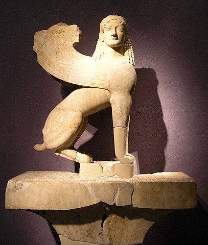

Criaturas Mitológicas
No se puede hablar de la mitología griega sin mencionar las criaturas mitológicas que pueblan sus relatos, desde las temibles gorgonas con su mirada petrificante hasta los grifos guardianes de tesoros ocultos. Estas criaturas, algunas veces monstruosas y otras veces benévolas, añaden un elemento de maravilla y misterio a los mitos griegos, desafiando las nociones convencionales de lo posible y lo imposible.
Quimera
Una criatura con la cabeza de un león, el cuerpo de una cabra y la cola de una serpiente. La Quimera aterrorizaba la región de Licia en Asia Menor y fue derrotada por Belerofonte montado en Pegaso.
Minotauro
Un ser mitad hombre, mitad toro, encerrado en un laberinto construido por Dédalo en Creta. Fue alimentado con sacrificios humanos hasta que Teseo lo derrotó.
Hidra de Lerna
Un monstruo acuático con múltiples cabezas de serpiente. Si una cabeza era cortada, dos más crecían en su lugar. Fue asesinada por Heracles como parte de sus Doce Trabajos.
Cerbero
El feroz perro de tres cabezas que guardaba la entrada al inframundo en la mitología griega. Era el hermano de la Quimera y la Hidra de Lerna.
Cíclopes
Gigantes de una sola cabeza con un solo ojo en la frente. Fueron encarcelados por Cronos en el Tártaro antes de ser liberados por Zeus.
Gorgonas
Criaturas femeninas con serpientes en lugar de cabello y la capacidad de convertir a quienes las miraran en piedra. La más famosa es Medusa.
Esfinges
Criaturas con cabeza de humano y cuerpo de león, a menudo con alas de ave. Solían hacer preguntas a los viajeros y devorar a aquellos que no podían responder correctamente.

Centauros
Criaturas con cuerpo de caballo y torso humano. Eran conocidos por su ferocidad en la batalla y su amor por el vino y la fiesta. El más famoso es Quirón, conocido por su sabiduría y bondad.
Reflexión
Las criaturas mitológicas griegas, con su diversidad y peculiaridad, han dejado una marca indeleble en la cultura y la imaginación del mundo. Desde la aterradora Quimera hasta el misterioso Cerbero, estas criaturas han cautivado a generaciones con sus historias de poder, misterio y peligro.
A través de sus encuentros con héroes valientes y dioses poderosos, estas criaturas han sido protagonistas de algunas de las más emocionantes y memorables aventuras en la mitología griega. Sus formas grotescas y sus habilidades sobrenaturales han despertado tanto temor como fascinación en aquellos que escuchan sus relatos.
Pero más allá de su papel como simples antagonistas en las leyendas griegas, estas criaturas también nos recuerdan la complejidad del mundo y la riqueza de la imaginación humana. Nos invitan a explorar los rincones más oscuros de nuestra psique y a enfrentar nuestros propios miedos y desafíos con valentía y determinación.
Así, mientras contemplamos las historias de la Quimera, el Minotauro, la Hidra de Lerna y otras criaturas mitológicas griegas, nos sumergimos en un mundo de maravilla y asombro que sigue inspirando y cautivando a personas de todas las edades en todo el mundo. Que su legado perdure como un recordatorio de la infinita creatividad y la eterna búsqueda de significado en el vasto panorama de la mitología.